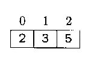

TYPES CONSTRUITS - TABLEAUX¶
Introduction: les structures de données¶
Une des problématiques importantes de l’informatique est le stockage de données. Pour traiter efficacement ces dernières, il faut les ranger de manière adéquate en mémoire.
L’objet informatique qui stocke ces données en mémoire s’appelle une structure de données. Une structure de donnée est caractérisée par les opérations qu’elle permet ainsi que leur coût (notion développée dans le cours d’algorithmique).
La première structure de donnée étudiée en spécialité NSI est le tableau.
Qu’est-ce qu’un tableau ?¶
Définition
Un tableau est une suite de valeurs stockées dans des cases mémoires contigües.
Un tableau permet de stocker plusieurs valeurs dans une seule variable et d’y accéder ensuite facilement. Python ne possède pas de type tableau, du moins pas sans utilisation de module spécialisé. On se servira du type list de python pour construire les tableaux.
En pratique, il s’agira d’énumérer les valeurs entre crochets et séparées par une virgule.
Ainsi, on déclare et affecte un tableau à la variable t en utilisant la syntaxe suivante:
t = [2, 3, 5]
Les valeurs 2, 3 et 5 sont indexées c’est-à-dire qu’on peut les repérer par leur position. Les index (indices) commencent partir de zéro.

Seules les valeurs sont stockées, les indices ne le sont pas. On accède à une valeur à l’aide de la notation t[indice]. Exemple:
t[2]
5
Si on tente un accès en dehors des cases valides du tableau on obtient une erreur de type IndexError:
t[4]
---------------------------------------------------------------------------
IndexError Traceback (most recent call last)
<ipython-input-4-5977d405d0f2> in <module>
----> 1 t[4]
IndexError: list index out of range
On obtient la taille d’un tableau avec la fonction native len.
len(t)
3
Le contenu d’un tableau peut être modifié: c’est une structure mutable. Pour cela, on utilise une affectation, exactement comme on l’a fait avec les variables jusqu’à maintenant:
t[1] = 15
print(t)
[2, 15, 5]
Remarques
le terme de
listbien que couramment utilisé en python est un choix malheureux de vocabulaire; en effet la confusion est souvent faite avec une structure de donnée qui sera vue en terminale;conformément au programme, on n’utilisera que des tableaux homogènes (c-à-d contenant qu’un seul type de donnée), bien que les
listde python permettraient de construire des tableaux hétérogènes.
Comment accéder aux éléments d’un tableau ?¶
Une possibilité pour parcourir les éléments d’un tableau est d’utiliser une boucle for sur les indices. Parcourir un tableau t en itérant sur les indices se fait de la manière suivante:
for i in range(len(t)):
traitement()
Le générateur d’entier range permet d’obtenir une séquence allant de 0 à len(t)-1. Par exemple, le code suivant permet d’afficher tous les éléments du tableau:
for i in range(len(t)): # parcours tout le tableau
print(t[i]) # affiche le ième élément
2
15
5
Comment construire de grands tableaux ?¶
Lorsque le tableau à construire est très grand, il est difficile d’énumérer tous ses éléments. On utilise alors la construction typique de Python:
DIM = 500 # taille du tableau
t = [0] * DIM
print(len(t))
500
Supposons que l’on veuille remplir ce tableau avec le carré des 500 premiers entiers:
for i in range(DIM):
t[i] = i * i
### Que vaut t[25] ?
print(t[25])
625
On peut également concaténer c’est-à-dire mettre bout à bout, deux tableaux:
t2 = [7, 10, 13] + [16, 19]
print(t2)
[7, 10, 13, 16, 19]
Quelques subtilités¶
Contrairement aux variables dont le type est un type de base comme int, float ou string, une variable de type tableau ne contient pas les valeurs. Elle contient une référence vers l’objet qui contient les valeurs.
x = 10
y = 15.5
ch = "chaine"
t = [1, 1, 2, 3, 5]
u = [2, 8, 16, 32, 64]

Une conséquence importante de ce mode de représentation est que l’affectation du tableau à une autre variable ne crée pas un nouveau tableau, elle ne fait que recopier la référence vers l’objet list qui contient les valeurs.
Ainsi, si à la suite du code précédent, on ajoute:
v = u
cela signifiera que v fait référence au même objet list que u.
 Cela implique que toute modification de v entraine une modification de u. Par exemple,
Cela implique que toute modification de v entraine une modification de u. Par exemple,
v[0] = 0
entraine:

D’où la recommandation: dans la mesure du possible on évitera d’avoir deux variables qui référencent le même tableau.